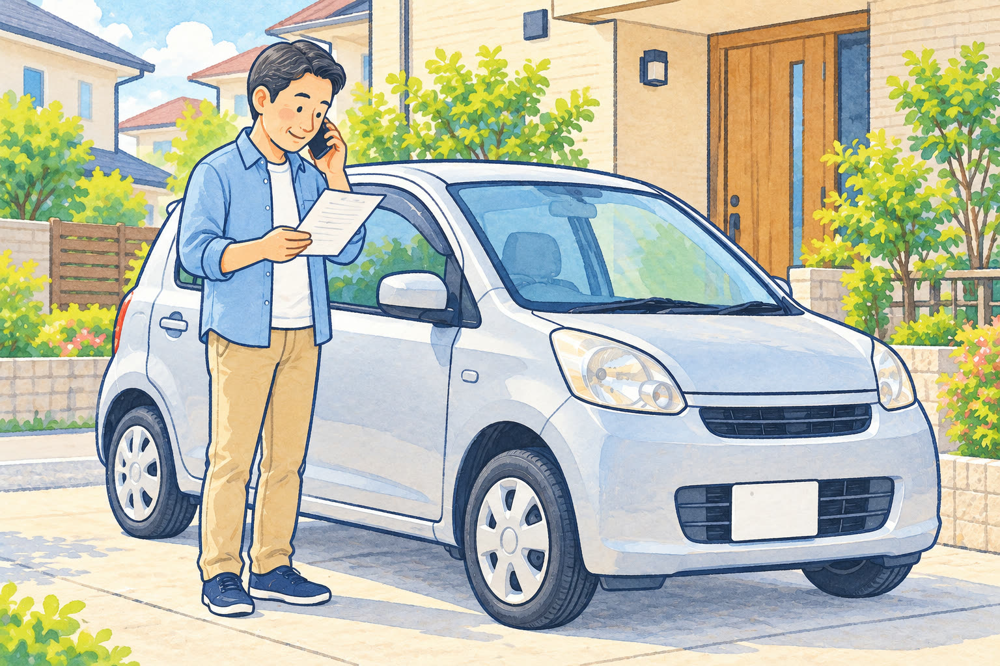
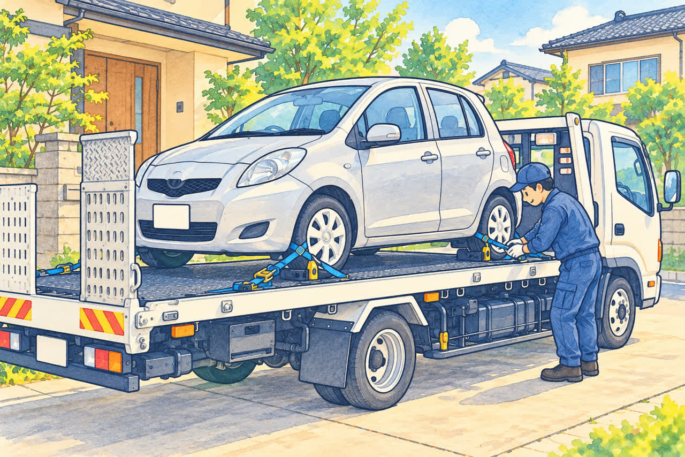
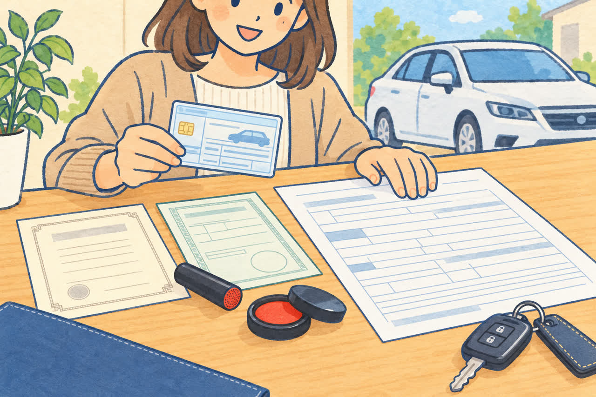
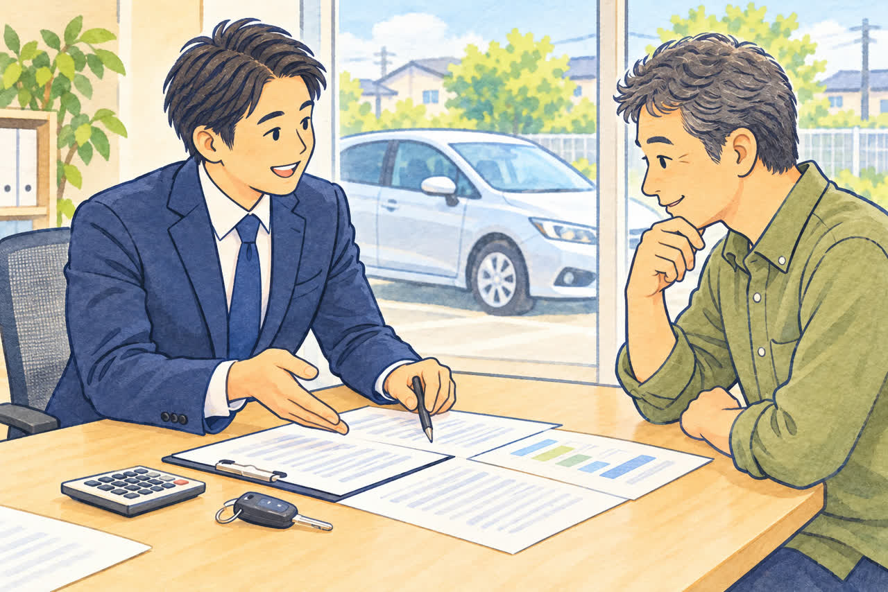

車検切れの車をお持ちの方へ
車検切れの車は公道を走れない。
どうやって廃車にする？
公開
こんにちは、足立区江北で自動車解体・廃車買取をしている「大崎商店 環七店」です。
「気づいたら車検が切れていた」
「しばらく乗っていなかったので、車検を通さずにそのままにしている」
「廃車にしたいけど、車検切れの車をお店まで運転していってもいいの？」
こんなご相談をよくいただきます。
結論からお伝えすると、車検が切れた車は、たとえ近所のお店まででも、そのまま公道を運転することはできません。 でも、心配はいりません。車検切れの車でも、きちんと廃車にする方法があります。
この記事では、車検切れの車を廃車にするときの運び方と、手続きの流れ、気をつけたいことをやさしくご紹介します。

車検切れの車で公道を走ると、どうなる？
車検（自動車検査）は、車が保安基準に適合しているかを確認する制度です。車検の期限が切れた車は、有効な臨時運行許可などの例外を除き、公道を走らせることが法律で禁止されています。
もし車検切れの車で公道を走ると、「無車検運行」という違反になります。
- 6か月以下の拘禁刑、または30万円以下の罰金
- 違反点数6点（前歴や累積点数によって、免許停止などの処分の対象になります）
さらに、車検と一緒に自賠責保険も切れている場合は、「無保険運行」という違反にもなります。
- 1年以下の拘禁刑、または50万円以下の罰金
- 違反点数6点
「近所だから」「ほんの少しだから」という理由でも、違反は違反です。また、自賠責保険が切れた状態で事故を起こしてしまうと、自賠責保険からの補償を受けられず、多額の損害賠償を負担するおそれがあります。
廃車のために車検切れの車を自己判断で運転せず、まずは引き取りを依頼しましょう。
まずは車検証で期限を確認
車検の期限は「有効期間の満了する日」で確認します。従来の紙の車検証には記載されていますが、電子車検証の券面には記載されていません。電子車検証の場合は、「車検証閲覧アプリ」または「自動車検査証記録事項」で確認してください。
フロントガラスに貼ってあるシール（検査標章）は、外側に期限の年月、内側に満了する年月日が表示されています。
自賠責保険の期限は、車検証と一緒に保管されている「自賠責保険証明書」で確認できます。自賠責保険は車検より少し長めに入っていることが多いので、車検が切れていても、自賠責保険はまだ残っていることがあります。
車検切れの車は、業者に引き取りを依頼しましょう

車検切れの車を廃車にするときは、積載車などで引き取りに来てもらう方法が安心です。お客様が公道を運転する必要はありません。
積載車は、車を荷台にのせて運ぶトラックです。エンジンがかからない車でも、車の状態や駐車場所に合った方法で積み込み、運ぶことができます。タイヤの状態や、車の周囲のスペースなどを事前にお知らせください。
大崎商店では、環七店から車で片道約50分圏内なら、レッカー代・出張費は無料です。足立区をはじめ、東京23区や埼玉県南部、千葉県西部などからもご相談いただけます。無料対応の範囲や引き取り方法は、所在地と車の状態を確認してご案内します。
仮ナンバーで廃車の車を運べる？
仮ナンバー（自動車臨時運行許可）は、車検や登録など、認められた目的・経路・期間に限って車を運行するための制度です。「廃車にする車を移動させたい」という理由だけで、必ず借りられるわけではありません。 廃車に伴う運行が対象になるかは、申請先に事前の確認が必要です。
足立区では、認められる運行目的のほか、有効な自賠責保険などの条件があります。許可期間は必要最小限で最大5日間、手数料は750円です。なお、自賠責保険の満期日は運行日として使えません。
廃車のために移動する場合は、仮ナンバーでの自走を前提にせず、まずは業者による引き取りをご相談ください。
車検切れでも、廃車の手続きはできます

「車検が切れていると、廃車の手続きができないのでは？」と心配される方もいますが、大丈夫です。
車検が切れていても、廃車（抹消登録）の手続きはできます。 必要な書類は、車検が残っている車とほとんど変わりません。
普通車の場合、基本的に次のものをご用意ください。
- □ 車検証の原本（期限が切れていても大丈夫です。見つからない場合は車検証をなくしたけど廃車できる？をご覧ください）
- □ ナンバープレート（前・後ろの2枚）
- □ 所有者の印鑑登録証明書（発行から3か月以内）
- □ 所有者の実印
委任状や譲渡証明書は、当店で用意します。引き取りのときに記入と実印の押印をしていただければ大丈夫です。
住所や名前が変わっている場合や、所有者がローン会社などになっている場合は、追加の書類が必要になります。詳しくは「廃車に必要な書類チェックリスト（普通車）」の記事もご覧ください。
軽自動車の場合は、基本的に次の2点をご用意ください。
- □ 車検証の原本（期限が切れていても大丈夫です。電子車検証の場合も原本が必要です）
- □ ナンバープレート（前・後ろの2枚）（取り外しについては当店にご相談ください）
軽自動車では、印鑑登録証明書や実印は不要です。所有者が販売店やローン会社などになっている場合は、事前に当店へお知らせください。詳しくは「軽自動車の廃車に必要な書類・準備チェックリスト」もご覧ください。
車検切れの車で気をつけたいお金のこと

自動車税と重量税は、別の税金です
「自動車税」と「自動車重量税」は、名前が似ていますが、別の税金です。普通車の自動車税は毎年納める都道府県の税金で、軽自動車の場合は市区町村に軽自動車税を納めます。一方、自動車重量税は、普通車・軽自動車ともに、新車登録や車検のときに納める国の税金です。
廃車のときに税金が戻ることを「還付」といいます。毎年の税金は普通車と軽自動車で還付の扱いが異なりますが、重量税はどちらにも条件付きの還付制度があります。
| 税金の種類 | 普通車 | 軽自動車 |
|---|---|---|
| 毎年納める税金 | 自動車税。納付済みの場合、抹消登録した翌月から年度末までの分が還付対象 | 軽自動車税。年度途中に廃車にしても、月割りの還付はありません |
| 車検時などに納める重量税 | 適正な解体・申請などの条件を満たし、車検の残存期間が1か月以上あれば還付対象 | 普通車と同様に、条件を満たせば還付対象 |
| 車検切れの車を廃車にする場合 | 自動車税は還付される場合があります。重量税は通常の廃車還付の対象外 | 軽自動車税の月割り還付はなく、重量税も通常の廃車還付の対象外 |
※この表は通常の廃車に伴う還付についての説明です。
毎年の税金は、車検が切れてもかかります
意外と知られていないのが、車検が切れていても、自動車税はかかり続けるということです。
自動車税は、原則として、毎年4月1日時点の車の所有者（所有権留保の場合は使用者）にかかる税金です。車検が切れていても、廃車（抹消登録）の手続きをしないかぎり、毎年の税金がかかります。
「乗っていないから」と放っておくと、税金だけを払い続けることになってしまいます。乗る予定がないなら、早めに廃車にするのがおすすめです。特に、3月末までに抹消登録を完了すると、次の年度の自動車税はかかりません。
軽自動車も、車検が切れたという理由だけでは軽自動車税は止まりません。翌年度の課税を避けるためには、3月末までに車検証の返納などの廃車手続きと、必要な税の申告を済ませることが大切です。
普通車は、車検切れでも自動車税が戻ることがあります
普通車の自動車税を年度分納めている場合は、一時抹消登録または永久抹消登録をした月の翌月から、翌年3月までの分が月割りで還付対象になります。 車検が切れているかどうかではなく、抹消登録が完了した月で決まります。
例えば、10月中に抹消登録が完了すれば、11月から翌年3月までの5か月分が還付対象です。車を引き取っただけでは還付の対象にならないため、手続きの完了時期も確認しましょう。
東京都では、還付金が発生すると通知が送られるため、原則として別途還付申請をする必要はありません。未納の都税がある場合は、その支払いに充てられます。東京都主税局・自動車税の還付
軽自動車税には、年度途中の廃車による月割り還付がありません
軽自動車税は、毎年4月1日時点の所有者に1年分が課税されます。4月2日以降に廃車にしても、その年度の軽自動車税を月割りで返してもらうことはできません。
例えば、普通車と同じように10月中に廃車手続きをしても、軽自動車税の11月から翌年3月までの分は戻りません。ただし、これは毎年の軽自動車税の話です。軽自動車でも、重量税や自賠責保険は、それぞれの条件を満たせば返金の対象になります。 足立区・軽自動車税
自賠責保険が残っていれば、お金が戻ることも
先ほどお伝えしたように、車検が切れていても、自賠責保険がまだ残っていることがあります。解約日から自賠責保険の満期日まで1か月以上残っていれば、廃車にしたあと保険会社で解約の手続きをすると、お金が戻ってくることがあります。
自賠責保険証明書をなくさないように、車検証と一緒に保管しておいてください。
車検切れの場合、通常の重量税の還付は受けられません
車検のときに払う「自動車重量税」は、適正に解体され、永久抹消登録などと同時に還付申請を行い、車検の残存期間が1か月以上ある場合に還付を受けられる制度があります。車検がすでに切れている場合は、通常の廃車還付では重量税の還付を受けられません。 自動車税や自賠責保険の返金とは、条件が異なります。
この重量税の還付制度は軽自動車にもあります。軽自動車では、解体返納または解体届出と同時に還付申請を行います。普通車・軽自動車とも、後から還付申請だけを行うことは原則できないため、廃車を依頼するときに確認しておきましょう。国税庁・重量税の廃車還付、軽自動車検査協会・還付申請の時期
ご相談から廃車手続き完了までの流れ
- 電話でご相談
車種、車の所在地、車検切れであること、エンジンやタイヤの状態をお知らせください。 - 必要書類と引き取り条件の確認
車検証の所有者や住所を確認し、必要な書類、費用、買取の可否などをご案内します。 - 日程を決めて引き取り
車の状態に合った方法で引き取り、書類をお預かりします。 - 解体・抹消登録などの手続き
必要な手続きを当店で代行します。 - 完了のご案内
手続き完了をご案内します。自賠責保険が残っている場合は、保険会社での解約手続きも忘れずに行いましょう。
車を引き取った日と、抹消登録が完了する日は同じとは限りません。 年度末など期限がある場合は、早めにご相談ください。引き取り当日の様子は「廃車のご依頼から現金お支払いまでの流れ」でもご紹介しています。
長く置いたままの車でも、まずはご相談ください
車検が切れた車は、しばらく動かしていないことが多いものです。
- バッテリーが上がってエンジンがかからない
- タイヤの空気が抜けている
- 車の中にほこりがたまっている
- 駐車場の奥にあって、出しにくい
このような車でも、大崎商店ではレッカー車で引き取りに伺います。「こんな状態でも大丈夫かな？」と迷ったら、まずはお電話でご相談ください。バッテリー切れやパンクで動かない車の引き取り事例は「エンジンがかからない車でも引き取ってもらえる？」でご紹介しています。
車種や状態によっては、車検切れの車でも買取ができ、その場で現金をお支払いできることもあります。
車検切れの車の廃車は、大崎商店にお任せください
車検切れの車は、自分で運ぶことができないぶん、「どうしたらいいの？」と悩みがちです。でも、レッカー車で引き取ってもらえば、お客様が運転したり、区役所へ行ったりする必要はありません。
- 廃車手続きの代行手数料は無料
- 環七店から車で片道約50分圏内（東京23区・埼玉県南部・千葉県西部など）はレッカー代・出張費無料
- エンジンがかからない車や、長く動かしていない車も引き取り
- 車種や状態によっては、引き取り当日その場で現金買取も可能
車検切れの車の廃車を、まるごとお手伝いします。
電話で相談する 03-3854-4141大崎商店 環七店
電話：03-3854-4141
〒123-0872
東京都足立区江北7丁目1−3
営業時間：月〜土 10:30〜18:00
休業日：日曜・祝日
環七沿い／舎人ライナー
西新井大師西駅
大崎商店 入谷店
電話：03-3899-2837
〒121-0836
東京都足立区入谷7丁目5−11
営業時間：月〜土 9:30〜17:30
休業日：日曜・祝日・第2土曜
お電話の際は、「車検切れの車の廃車について」とお伝えください。車検証と自賠責保険証明書をお手元にご用意いただくと、ご案内がスムーズです。
※掲載画像はAIで生成したイメージです。実際の店舗・車両・書類とは異なります。
参考：国土交通省・自賠責保険に加入していないと／警視庁・交通違反の点数一覧表／足立区・自動車臨時運行許可（仮ナンバー）／国土交通省・電子車検証／国税庁・自動車重量税の廃車還付／損保ジャパン・自賠責保険の解約と返戻